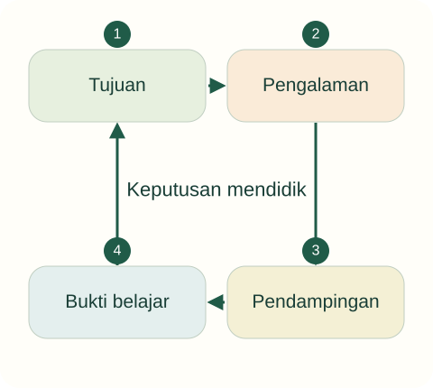

Tujuan pembelajaran
- Membedakan pendidikan, pengajaran, pembelajaran, pengasuhan, dan pelatihan.
- Menilai tindakan pendidik melalui tujuan, proses, dan penghormatan terhadap anak.
- Membedakan pernyataan normatif dari penjelasan ilmiah dalam pendidikan.
Apakah setiap tindakan orang dewasa terhadap anak dapat disebut pendidikan?
Di RA, guru meminta semua anak duduk diam selama 25 menit. Anak yang bergerak diberi label tidak tertib. Pada kegiatan makan, guru lain mengajak anak menyiapkan alat makan dan menjelaskan cara meminta bantuan. Keduanya menyebut kegiatan mereka sebagai pendidikan.
Temukan persoalan konseptual
Sebelum membaca penjelasan, pisahkan kejadian yang dinyatakan dalam kasus dari dugaan Anda. Gunakan pertanyaan berikut untuk menyiapkan analisis.
- Apa tujuan pendidikan yang sedang dipertaruhkan?
- Pengalaman apa yang dialami anak, dan informasi apa yang belum tersedia?
- Konsep atau jenis sumber apa yang diperlukan untuk menilai tindakan pendidik?

Pendidikan sebagai usaha yang memiliki arah
UU 20/2003 Pasal 1 memberi pengertian yuridis pendidikan sebagai usaha sadar dan terencana untuk mewujudkan suasana belajar serta proses pembelajaran yang memungkinkan peserta didik aktif mengembangkan potensinya. Kata aktif perlu diperhatikan: anak tidak sekadar menjadi penerima perintah. Definisi hukum memberi arah penyelenggaraan, sedangkan ilmu pendidikan membantu memeriksa bagaimana arah tersebut diwujudkan.
Untuk membaca praktik, tanyakan tiga hal: kemampuan atau nilai apa yang hendak dikembangkan, pengalaman apa yang dialami anak, dan apakah cara yang digunakan dapat dipertanggungjawabkan. Tujuan baik belum membenarkan semua cara. Mempermalukan anak demi ketertiban perlu dikritisi meskipun guru mengaku bermaksud mendisiplinkan. Penilaian tindakan memerlukan informasi tentang situasi dan respons anak, bukan niat pendidik saja.
Lima istilah yang berhubungan
Pendidikan merupakan proses luas yang berorientasi pada perkembangan manusia dan nilai yang dianggap baik. Pengajaran adalah usaha terarah membantu penguasaan pengetahuan atau keterampilan. Pembelajaran menyoroti proses dan kondisi interaksi yang memungkinkan belajar. Pelatihan menekankan pengulangan untuk meningkatkan kecakapan tertentu. Pengasuhan memenuhi kebutuhan anak melalui perawatan, hubungan, perlindungan, dan dukungan.
Dalam AUD, kelimanya dapat hadir sekaligus. Saat mencuci tangan, pendidik merawat kebutuhan kesehatan, mengajarkan urutan, menyediakan kesempatan mencoba, melatih kebiasaan, dan menumbuhkan tanggung jawab. Pembeda utamanya adalah sudut analisis, bukan pemisahan kegiatan secara mutlak. Pengasuhan yang responsif mempunyai dimensi edukatif, tetapi guru tetap perlu merancang kesempatan belajar yang lebih luas.
Ilmu pendidikan dan keputusan praktis
Ilmu pendidikan mengkaji persoalan pendidikan secara sistematis dengan konsep, argumentasi, dan bukti. Persoalannya memuat dimensi normatif: apa yang seharusnya diupayakan, serta dimensi empiris: apa yang terjadi dan bagaimana suatu tindakan bekerja. Misalnya, penghormatan terhadap anak merupakan komitmen nilai; perubahan partisipasi setelah strategi tertentu merupakan pertanyaan yang dapat diperiksa melalui pengamatan.
Pengalaman guru berharga, tetapi kesan satu kali belum cukup untuk menyimpulkan hubungan sebab-akibat. Anak yang diam mungkin memahami, takut, lelah, atau sedang mengamati. Mahasiswa perlu belajar menyebut bukti yang tersedia dan kemungkinan penjelasan lain. Kebiasaan ini membuat teori menjadi alat berpikir, bukan hiasan di awal laporan.
Belajar dari kegiatan keseharian
Konteks PAUD memberi banyak kesempatan pendidikan di luar kegiatan meja. Menyambut kedatangan, bermain, makan, dan berpisah dengan orang tua melibatkan bahasa, emosi, hubungan, dan tanggung jawab. Usulan pedagogis dalam unit ini adalah merancang kesempatan anak berpartisipasi pada kegiatan tersebut dengan bantuan yang cukup.
Misalnya, ketika air tumpah, guru dapat memastikan lantai aman, mengajak anak mengambil lap, lalu berdiskusi singkat tentang cara membawa gelas. Anak mengalami hubungan antara tindakan dan tanggung jawab tanpa direndahkan. Keberhasilan tidak hanya dinilai dari lantai yang bersih, tetapi juga dari pemahaman dan partisipasi anak dalam memperbaiki keadaan. Bacaan peta PAUD Indonesia tersedia pada Sujiono (2009) dan Suyadi dan Ulfah (2013).
Kembali ke kasus
Diam belum menjadi bukti belajar. Pada kasus pertama perlu diperiksa alasan durasi, kesempatan bergerak, dan dampak pelabelan. Kegiatan makan pada kasus kedua memiliki potensi edukatif karena anak berpartisipasi; keberhasilannya tetap perlu diamati, bukan diasumsikan dari desain guru.
Analisis ini merupakan contoh penalaran pedagogis. Pada situasi nyata, keputusan memerlukan informasi tentang anak dan konteks lembaga.
Latihan terbimbing
Petakan kegiatan mencuci tangan: tulis satu unsur pengasuhan, pengajaran, pelatihan, dan pendidikan. Contoh awal: menyediakan sabun memenuhi kebutuhan perawatan; menjelaskan alasan mencuci tangan membantu pemahaman. Lengkapi dengan tindakan anak dan bukti yang dapat diamati.
Latihan mandiri
Pilih satu rutinitas di PAUD/RA. Tulis 250–350 kata yang menjelaskan tujuan, tindakan guru, peran anak, serta kemungkinan tindakan yang justru tidak edukatif. Gunakan satu konsep dan satu rujukan.
- Konsep digunakan dengan tepat dan dijelaskan hubungannya dengan kasus.
- Fakta dipisahkan dari interpretasi; sumber mendukung jenis klaimnya.
- Tindakan konkret, menghargai anak, dan memiliki cara peninjauan.
Lihat pembahasan
Anak berlatih meminta bantuan dan menjelaskan alasan berbagi alat makan.
Partisipasi dan pemahaman anak berkaitan langsung dengan tujuan edukatif. Kecepatan atau ketertiban saja belum cukup untuk menilai proses belajar.
Refleksi calon pendidik
Kapan saya pernah menyamakan anak yang diam dengan anak yang belajar? Bukti apa yang seharusnya saya cari?
Catatan hanya disimpan di peramban ini. Tidak dikirim kepada dosen.
Intisari dan tindak lanjut
- Tindakan edukatif perlu dinilai dari tujuan, proses, dan pengalaman anak; niat baik saja belum cukup.
- Pengasuhan, pengajaran, pembelajaran, dan pelatihan dapat hadir dalam kegiatan yang sama.
- Pengamatan perilaku perlu dibedakan dari penafsiran mengenai pemahaman anak.
Uji kembali pemahaman di atas melalui latihan mandiri. Jika alasan Anda belum menghubungkan konsep dan tindakan, baca ulang submateri terkait sebelum menandai selesai.
Referensi dan bacaan pendamping
Sumber untuk klaim khusus disebut pada uraian. Buku pendamping tidak dikutip langsung. Jenis dan batas penggunaan setiap rujukan dijelaskan di bawah.
- Republik Indonesia. (2003). Undang-Undang Nomor 20 Tahun 2003 tentang Sistem Pendidikan Nasional.Fokus Pasal 1, 3, 13, dan 28. Status UU secara keseluruhan tidak berarti seluruh pasal bebas perubahan atau putusan pengadilan.
- Sujiono, Y. N. (2009). Konsep dasar pendidikan anak usia dini. Indeks.Bacaan pendamping Indonesia; metadata terbitan diverifikasi melalui katalog. Isi buku tidak dikutip langsung dan bagian regulasi lamanya perlu dimutakhirkan.
- Suyadi, & Ulfah, M. (2013). Konsep dasar PAUD. Remaja Rosdakarya.Bacaan pendamping untuk peta PAUD Indonesia. Tahun mengikuti terbitan 2013; cocokkan dengan cetakan yang digunakan.